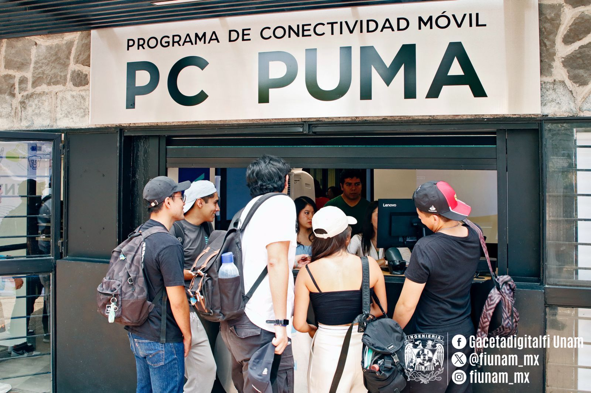
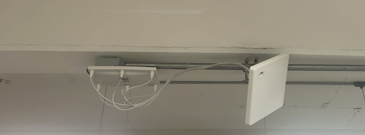
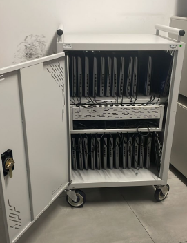
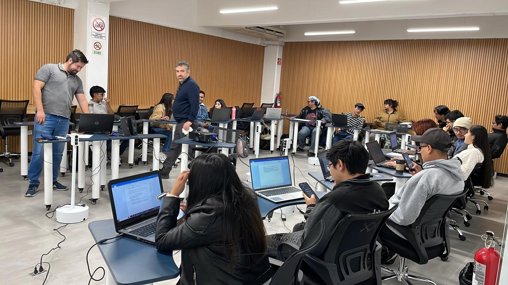

Quioscos PC Puma

Proyecto PC Puma
Es una iniciativa estratégica de la Universidad Nacional Autónoma de México que impulsa la transformación digital en la comunidad universitaria.
Objetivo
- Fomentar una cultura digital que garantice el acceso equitativo a la conectividad y a las herramientas tecnológicas, como condición esencial para fortalecer el aprendizaje, la docencia y la innovación. Este proyecto dentro de la Facultad de Ingeniería está a cargo del Dr. Alejandro Velázquez Mena, jefe de la División de Ingeniería Eléctrica(DIE). Para impulsar la Transformación Digital con un profundo sentido social y humano mediante el uso de herramientas tecnológicas y digitales.
Etapas de PC Puma

Etapa 1
Proveer de conectividad de red inalámbrica WI-FI en todas las aulas, áreas comunes y Divisiones Académicas; proporcionando una manera simplificada para acceder a sus servicios.

Etapa 2
- Impulsar las distintas vertientes del proyecto, se adquirieron equipos que conformaran los Módulos PC PUMA, además de desarrollar un sistema de administración.
- Proporcionar el préstamo de equipo de cómputo PC o Laptop a los alumnos y profesores.

Etapa 3
Salas de cómputo colaborativas para profesores y alumnos que fortalezcan el desarrollo de sus actividades académicas.